Portfólio de imagem com IA não é uma galeria de imagens bonitas soltas — isso qualquer gerador faz sozinho. O que um cliente compra é direção: a prova de que você entende um pedido, traduz em decisões visuais, controla o resultado e entrega uma série que parece de uma marca só. Este módulo junta tudo que você fez no curso em um único projeto, com a Terra Alta como exemplo completo e o seu cliente como lição de casa.
1Briefing: do pedido à linguagem visual
O que é
O briefing tem de 5 a 7 frases e responde a cinco perguntas. Pode ser um cliente real, sua própria marca ou um cliente fictício — mas escolha um nicho em que você gostaria de trabalhar de verdade, porque este projeto vira a primeira peça do seu portfólio.
O briefing da Terra Alta
| Pergunta | Resposta do cliente |
|---|---|
| Quem é? | Terra Alta Cafés, torrefação familiar na Serra da Mantiqueira, terceira geração de cafeicultores. |
| O que faz? | Compra café de pequenos produtores da serra, torra em lotes pequenos num torrador antigo e vende grão e moído. |
| Para quem? | Adultos de 28 a 50 anos que preparam café em casa com coador ou prensa e se importam com origem. |
| Qual a vibe? | Artesanal, calma, luminosa, honesta — manhã na montanha, nada de luxo frio. |
| Onde as imagens vão? | Instagram (feed e Reels), site com loja, rótulos e um cartaz para o ponto de venda. |
Por que aprender
O briefing ainda está em linguagem de cliente. O seu trabalho é traduzi-lo em linguagem de set — é essa tradução que vai para o prompt. Para a Terra Alta:
- 3–5 adjetivos de estilo: quente, natural, luminoso, tátil, sem pressa.
- 2–3 referências descritas (sem nomes de artistas): fotografia documental de ofício; editorial de revista de gastronomia com luz de janela; filme 35 mm com grão sutil.
- Constantes técnicas que saem daí: luz de janela lateral a 3500K, lentes de 35 a 85 mm, paleta mostarda–creme–kraft–carvalho, texturas sempre visíveis.
- Uso principal: posts de feed 4:5 e hero do site 16:9 — o que já define espaço negativo para título.
Conceitos-chave em ação
✓ Briefing que ajuda
- “público que coa café em casa e quer saber a origem”
- “calmo e luminoso, manhã na montanha”
- “feed 4:5, hero do site, cartaz A3”
✗ Briefing que não ajuda
- “público geral”
- “bonito e moderno”
- “para as redes”
2Prompt-mestre e três variações
O que é
O prompt-mestre é a imagem-herói da marca escrita como um bloco de texto corrido (não em tópicos), com sujeito, ação, plano, lente, luz, textura, composição, estilo e a emoção no fim — o molde do módulo 1-2. Dele saem duas variações controladas: A muda o plano ou a lente; B muda a luz ou a composição.
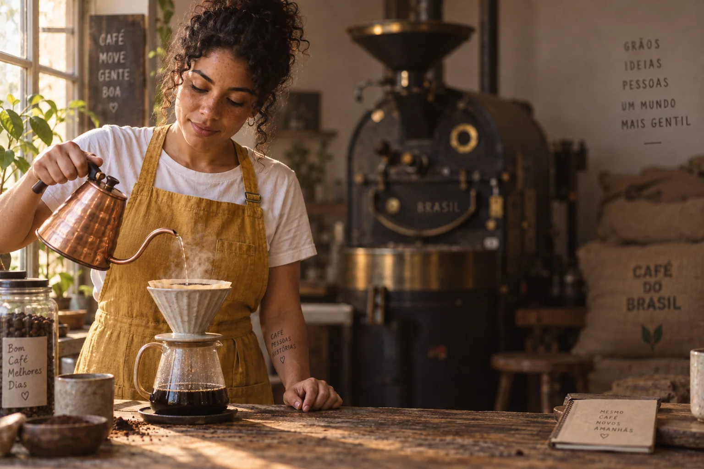
Prompt usado
Medium shot of Lia, a Brazilian barista in her early 30s with curly dark hair tied up, light-brown skin and freckles, wearing a mustard-yellow linen apron over a white t-shirt, slowly pouring hot water from a copper gooseneck kettle into a ceramic pour-over dripper, focused and calm. Shot on a 50mm lens at f/2, eye level. Soft morning window light from the left, warm 3500K, gentle shadow falloff on the right side of her face. Visible steam, matte glazed ceramic, worn wooden counter with coffee grounds, linen texture on the apron. Subject on the left third, negative space on the right with a softly blurred vintage coffee roaster and burlap sacks in the background. Natural documentary photography, subtle 35mm film grain, evoking quiet craftsmanship at dawn.
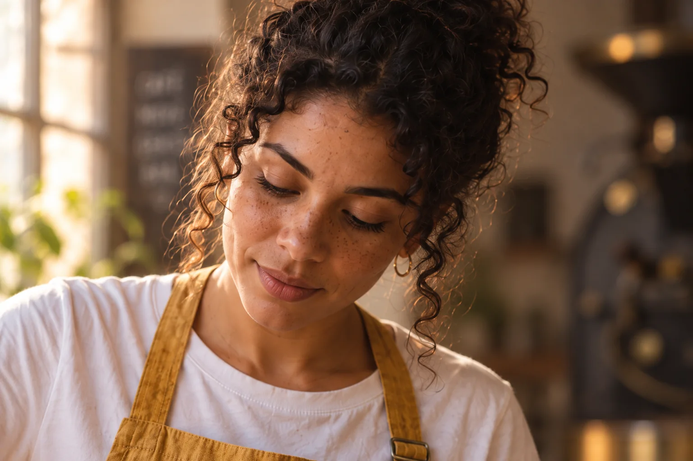
Instrução de edição usada (sobre a imagem-base)
Reframe this exact scene as a CLOSE-UP: only Lia's face and shoulders fill the frame, her concentrated eyes looking down at the pour. Keep the same woman, same hair, freckles, apron, same warm window light from the left and same color grade. Background becomes an out-of-focus blur.
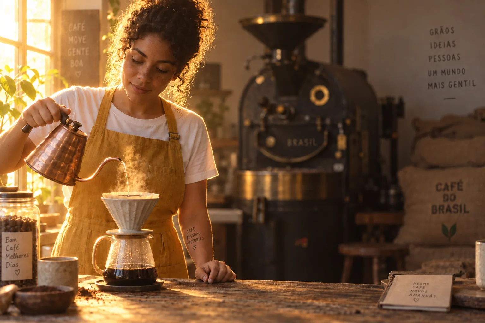
Instrução de edição usada (sobre a imagem-base)
Change ONLY the lighting: strong BACKLIGHT from a window behind Lia, a golden rim light outlining her hair, shoulders and the rising steam, her face in soft shadow with gentle fill. Keep the same woman, pose, framing, lens, background and objects identical.
As três imagens da Terra Alta que você já viu no módulo 1-2, agora lidas como etapa de projeto. A e B são edições do mestre, então só a camada escolhida mudou. O close fala da pessoa; o contraluz fala do ritual (o vapor vira protagonista). O mestre continua sendo o melhor “retrato de marca” — e isso é uma conclusão, não um gosto.
Por que aprender
Mostrar três opções sem critério é pedir ao cliente que faça o seu trabalho. Mostrar três opções com o motivo de cada uma é direção. É para isso que serve o ciclo de comparação escrito:
Ciclo de comparação da Terra Alta
| Versão | O que mudou no prompt | O que mudou na imagem | Serve para |
|---|---|---|---|
| Mestre | — | equilíbrio entre Lia e ofício, espaço à direita | hero do site, post de apresentação |
| A: close | “medium shot” → “close-up” | rosto domina, fundo some, mais intimidade | Reels de bastidor, depoimento |
| B: contraluz | luz lateral → contraluz com recorte | vapor e cabelo desenhados em dourado, rosto em sombra suave | capa de campanha, cartaz |
Conceitos-chave em ação
Feche o ciclo com duas perguntas: qual versão está mais perto do resultado profissional que você imaginou? e quais palavras tiveram mais efeito? Na Terra Alta, as palavras de maior impacto foram a direção da luz e a lente; “cinematic” e “beautiful” não mudavam nada e saíram de todos os prompts. Essas descobertas vão direto para o preset.
3Do prompt ao sistema: JSON e preset
O que é
No módulo 1-2 você escreveu uma imagem em JSON. No projeto, o JSON descreve o sistema: os campos que nunca mudam (luz, paleta, estilo, personagem) ficam preenchidos; os que mudam a cada peça ficam como variáveis entre < >.
Sistema visual da Terra Alta em JSON
{
"brand": "Terra Alta Cafés — small-batch roastery, Serra da Mantiqueira",
"character": {
"who": "Lia, Brazilian barista, early 30s, curly dark hair tied up, light-brown skin, freckles",
"wardrobe": "mustard-yellow linen apron over a white t-shirt",
"reference_image": "lia-mestre_v01.png"
},
"scene": { "subject_action": "<what happens in this piece>", "location": "<roastery | farm | counter | table>" },
"camera": { "shot": "<close-up | medium | full | wide | top-down>", "lens": "<35 | 50 | 85 | 100 macro> mm", "angle": "eye level unless stated" },
"lighting": { "source": "window or low morning sun", "direction": "from the left", "quality": "soft", "temperature": "3500K" },
"palette": ["#C9A227 mustard", "#F3EBDD cream", "#A47B55 kraft", "#5A3E2B roast", "#4F5D3A leaf"],
"textures": "always visible: linen, kraft fibers, speckled matte glaze, oak grain, skin pores",
"composition": "<placement>, clean negative space for text when the piece needs a headline",
"style": "natural documentary photography, subtle 35mm film grain",
"negative": "no black marble, no cold blue light, no text on signs or chalkboards, no plastic skin",
"mood": "quiet craftsmanship, mornings in the mountains"
}
Por que aprender
O JSON é a parte técnica; o preset é a página que acompanha o JSON e que um colega (ou você daqui a seis meses) consegue seguir. Ele registra o que funcionou no seu gerador e as regras do jogo:
Preset de uma página — o que ele contém
| Seção | Terra Alta |
|---|---|
| Marca e cenário de uso | torrefação artesanal; feed, site, rótulo, cartaz |
| Prompt-mestre refinado | a versão final, depois do ciclo de comparação |
| Biblioteca de referências | lia-mestre (identidade), textura-com (materiais), comp-tercos (espaço para título) — com nota de quando usar cada uma |
| Modelo e configurações | gerador escolhido e por quê; proporções usadas; semente e intensidade de referência, se a ferramenta mostrar |
| Pode mudar | ação, lugar, plano, lente, composição, texto da peça |
| Não pode mudar | rosto e figurino da Lia, luz da esquerda a ~3500K, paleta, grão, negativos |
| Exemplos | 2–4 imagens aprovadas que mostram o sistema funcionando |
Conceitos-chave em ação
✓ Preset que funciona
- uma página, com as regras “pode / não pode” explícitas
- prompt colável e JSON com variáveis marcadas
- imagens de exemplo ao lado das regras
✗ Preset que ninguém usa
- dez páginas de teoria de cor
- prompt com o texto de uma peça antiga no meio
- “use o bom senso” no lugar das constantes
4Antes e depois: até ficar pronta para o cliente
O que é
Comece por um uso definido em uma frase — “hero do site, 16:9, título à direita” — e só então edite. As edições se dividem em estruturais (proporção, recorte, expansão, posição do sujeito) e de conteúdo (fundo, objetos, roupa, detalhes). Faça as estruturais primeiro e salve essa versão: é o seu “estrutura resolvida”.
Por que aprender
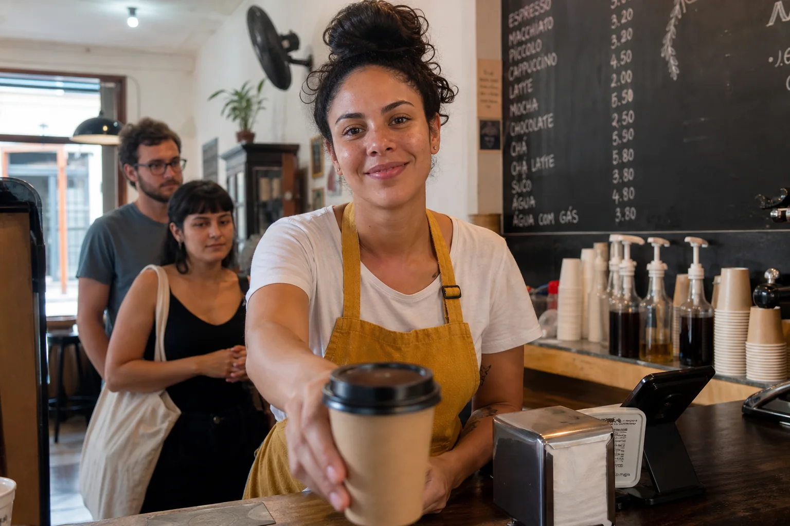
Prompt usado
Medium shot of a Brazilian barista in her early 30s with curly dark hair tied up, light-brown skin and freckles, wearing a mustard-yellow linen apron over a white t-shirt, serving a cup of coffee over the counter during a busy morning rush in a small café. Centered in the frame. Behind her: two customers waiting, a chalkboard menu full of handwritten prices, a napkin dispenser, stacked paper cups, unbranded plastic syrup bottles and a cash register on the counter. Mixed overhead fluorescent light and daylight. Phone-snapshot look. All bottles and machines unbranded: no real brand names or logos anywhere.
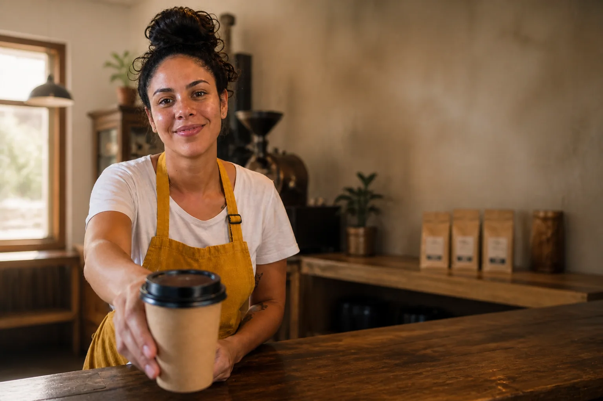
Instrução de edição usada (sobre a imagem-base)
Turn this snapshot into a client-ready website hero image. Keep the exact same woman, face, freckles, hair, apron, pose and the cup she is serving. Remove the customers, the chalkboard menu and all its text, the napkin dispenser, paper cups, plastic bottles and the cash register; replace them with a calm, softly blurred rustic roastery background — wooden shelves with a few kraft coffee bags and a vintage roaster far behind. Shift the composition so she stands on the left third and the right half becomes clean negative space for a headline. Relight to soft window light from the left, warm 3500K, and give it a natural documentary color grade with subtle film grain.
O antes é uma geração independente simulando a foto que o cliente manda: barista quase no centro estendendo um copo de café para viagem, fila de clientes, lousas cheias de preços, porta-guardanapos, copos e garrafas de xarope. O depois é uma edição dessa imagem: mesma barista e mesmo gesto, fundo trocado por uma torrefação desfocada, sujeito no terço esquerdo, metade direita livre para o título, luz de janela quente.
Conceitos-chave em ação
Nota de fluxo de trabalho (vai para o case)
- Uso: hero do site da Terra Alta, 16:9, título à direita.
- Ferramenta: edição por prompt sobre a imagem original.
- Estrutural: sujeito levado ao terço esquerdo; metade direita limpa para texto.
- Conteúdo: removidos clientes, lousa, copos, garrafas e caixa; fundo trocado por prateleiras e torrador desfocados.
- Luz e cor: luz de janela da esquerda a ~3500K e correção de cor documental.
- O que eu melhoraria: conferir a mão que segura a xícara em 100% e expandir para 21:9 para telas largas.
5A série final: seis imagens, um sistema
O que é
Uma série coerente mistura variedade de assunto com constância de linguagem. Para a Terra Alta, cada peça tem um papel na história da marca, e todas compartilham as mesmas constantes do preset:
| Peça | Papel na história | Plano e lente | Como foi feita |
|---|---|---|---|
| 1 · Retrato | quem faz o café | close, 85 mm | edição da imagem-mestre da Lia (referência de identidade) |
| 2 · Torra | o ofício | médio, 35 mm, ângulo baixo leve | edição da imagem-mestre |
| 3 · Origem | de onde vem o grão | médio-aberto, 35 mm, externa | edição da imagem-mestre + produtor fictício |
| 4 · Produto | o que se compra | médio-close, 85 mm | geração nova com as linhas de estilo do preset |
| 5 · Prova | o cuidado | zenital | geração nova com as linhas de estilo do preset |
| 6 · Espaço | o lugar | plano geral, 24 mm | edição da imagem-mestre |
Por que aprender
Por que seis e não doze? Seis peças cabem numa prancha, fecham duas linhas do grid do Instagram e bastam para provar consistência sem virar repetição. Escolha os papéis pela história da marca, não pelo que é fácil de gerar: quem (pessoa), como (ofício, processo), de onde (origem, lugar), o quê (produto), com que cuidado (detalhe) e onde (atmosfera). Se duas peças contam a mesma coisa, troque uma. E varie o plano de propósito — close, médio, geral, zenital — para que a série respire quando aparecer lado a lado no feed.
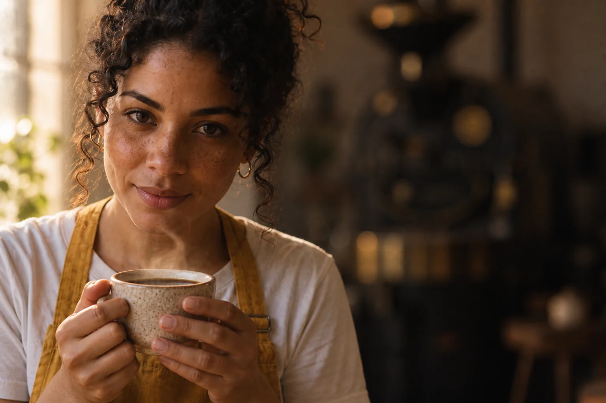
Instrução de edição usada (sobre a imagem-base)
Use the woman in the attached image as a strict identity reference (same face, freckles, curly dark hair tied up, light-brown skin, mustard-yellow linen apron over a white t-shirt) and completely re-shoot a NEW photo: close-up portrait, she holds a speckled cream stoneware cup of black coffee with both hands just below her chin and looks directly into the camera with a calm, slight smile. 85mm lens at f/1.8, eye level. Soft morning window light from the left, warm 3500K, gentle shadow on the right side of her face. Visible skin pores, linen texture, steam rising from the cup. Face on the left third, the roastery reduced to a creamy warm blur on the right. Natural documentary photography, subtle 35mm film grain, warm muted palette of mustard, cream, kraft brown and oak. No text on signs or chalkboards.
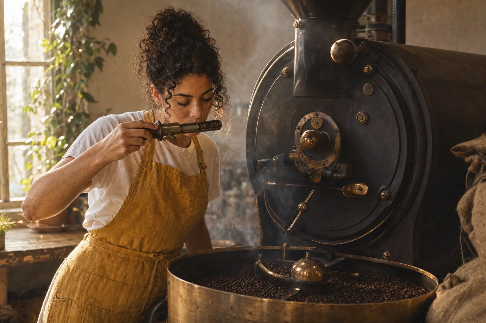
Instrução de edição usada (sobre a imagem-base)
Use the woman in the attached image as a strict identity reference (same face, freckles, curly dark hair tied up, light-brown skin, mustard-yellow linen apron over a white t-shirt) and completely re-shoot a NEW photo: medium shot of her at a vintage cast-iron drum coffee roaster, pulling the small sample trier out of the drum and smelling the freshly roasted beans in it, concentrated. Freshly roasted beans spinning in the round cooling tray below, a thin haze of roasting smoke. 35mm lens at f/2.8, slightly low angle. Soft morning window light from the left, warm 3500K, the smoke catching the light. Worn cast iron, brass details, burlap sacks. Natural documentary photography, subtle 35mm film grain, warm muted palette of mustard, cream, kraft brown and oak. No text on signs or chalkboards.
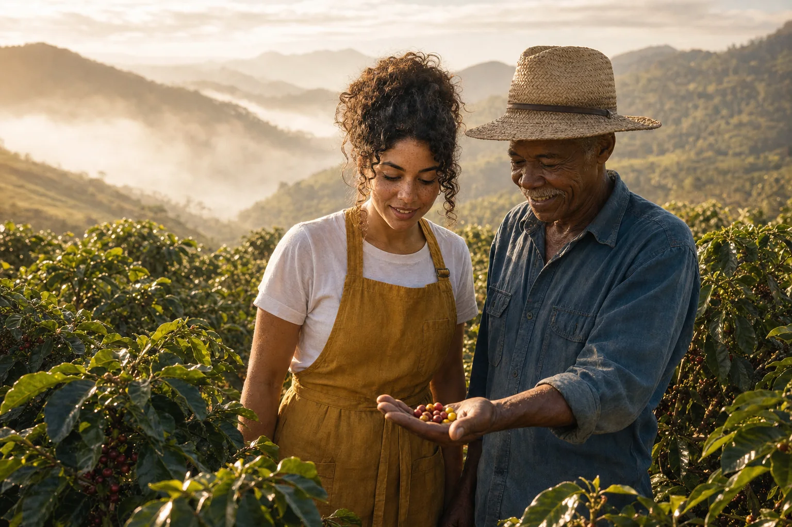
Instrução de edição usada (sobre a imagem-base)
Use the woman in the attached image as a strict identity reference (same face, freckles, curly dark hair tied up, light-brown skin, mustard-yellow linen apron over a white t-shirt) and completely re-shoot a NEW photo OUTDOORS: medium-wide shot on a hillside coffee farm in the Serra da Mantiqueira, early morning. She stands between rows of coffee shrubs next to a fictional coffee producer — a Black Brazilian man in his 60s with a short white mustache, straw hat and faded blue work shirt — who shows her a handful of ripe red and yellow coffee cherries in his open palm; both look at the cherries and smile. 35mm lens at f/4. Soft low morning sun from the left, warm 3500K, light mist over the mountains behind them. Glossy coffee leaves, rough hands, straw texture. Natural documentary photography, subtle 35mm film grain, warm muted palette of mustard, cream, kraft brown and green.
As três com a Lia foram feitas editando a imagem-mestre do módulo 1-2 como referência de identidade e pedindo uma foto nova. Repare no que se repete: luz vinda da esquerda, tons mostarda e creme, grão leve, texturas visíveis. O produtor da peça 3 é um personagem secundário fictício.
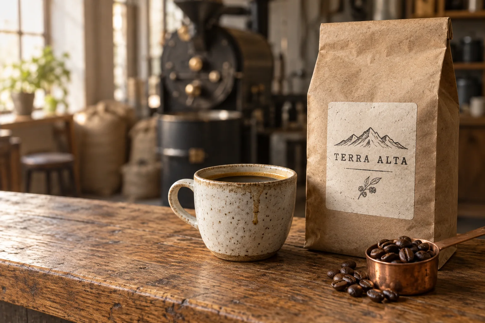
Prompt usado
Medium close-up product photograph of a kraft-paper coffee bag with a hand-stamped cream label reading 'TERRA ALTA' standing on a worn oak counter, next to a speckled cream stoneware cup of black coffee with a thin golden crema and a small copper scoop full of roasted beans. 85mm lens at f/2.8, slightly above eye level. Soft morning window light from the left, warm 3500K, gentle shadow to the right. Rough recycled kraft fibers, matte speckled glaze with a drip line, oily beans with a center crease, oak grain. Bag on the right third, clean negative space of softly blurred roastery on the left. Natural documentary photography, subtle 35mm film grain, warm muted palette of mustard, cream, kraft brown and oak. No other text anywhere.
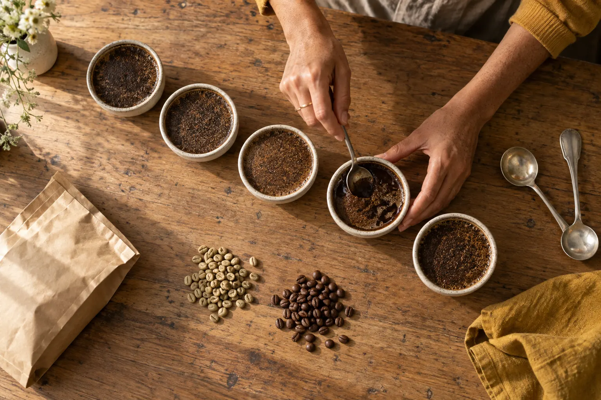
Prompt usado
Bird's-eye view, straight down, of a coffee cupping session on a worn oak table: five small cream stoneware cupping bowls in a diagonal row, each with a crust of ground coffee, two silver cupping spoons, a small pile of green coffee beans and a small pile of roasted beans, a kraft-paper bag lying flat, a linen cloth in mustard yellow, and a woman's hands with freckled light-brown skin breaking the crust of one bowl with a spoon. Soft morning window light from the left, warm 3500K, long soft shadows to the right. Graphic, orderly composition with breathing space. Natural documentary photography, subtle 35mm film grain, warm muted palette of mustard, cream, kraft brown and oak. No text or labels anywhere.
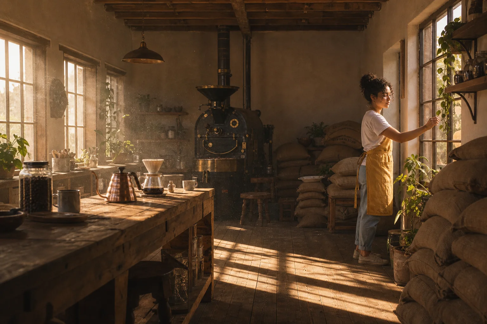
Instrução de edição usada (sobre a imagem-base)
Use the woman in the attached image as the identity reference (same curly dark hair tied up, mustard-yellow linen apron over a white t-shirt) and completely re-shoot a NEW photo: a wide establishing shot of the whole rustic roastery at dawn. She is small in the frame, on the right third, pushing open a large wooden-framed window; pale golden first light floods in from the left across the wooden floor, the vintage cast-iron roaster, stacked burlap coffee sacks and a long wooden counter. Dust particles floating in the light beams. 24mm lens at f/5.6, eye level. Warm 3500K light, deep soft shadows. Natural documentary photography, subtle 35mm film grain, warm muted palette of mustard, cream, kraft brown and oak. No text on signs or chalkboards.
O produto (pacote com etiqueta TERRA ALTA, xícara salpicada e concha de cobre) e a prova (cinco tigelas em diagonal, grãos verdes e torrados, pano mostarda) são gerações novas, sem imagem de referência — a coerência veio de repetir palavra por palavra as linhas de luz, paleta e estilo do preset. O plano geral fecha a série mostrando o lugar, com a Lia pequena no quadro.
Conceitos-chave em ação
✓ O que segura a série
- mesma direção e temperatura de luz em todas
- linhas de estilo e paleta coladas idênticas
- personagem sempre gerado a partir da mesma referência
- variar plano e lente de propósito, para o feed respirar
✗ Onde a coerência quebra
- uma peça com luz fria “porque ficou bonita”
- reescrever a descrição da Lia com outras palavras
- editar uma edição de uma edição (o rosto deriva)
- seis imagens no mesmo plano médio
6Apresentação ao cliente: prancha e case
O que é
A prancha é uma página (ou slide) com a série, a paleta e as regras de luz — o sistema visual em um olhar. O case é a versão narrada para o portfólio: problema, processo, decisões, resultado.
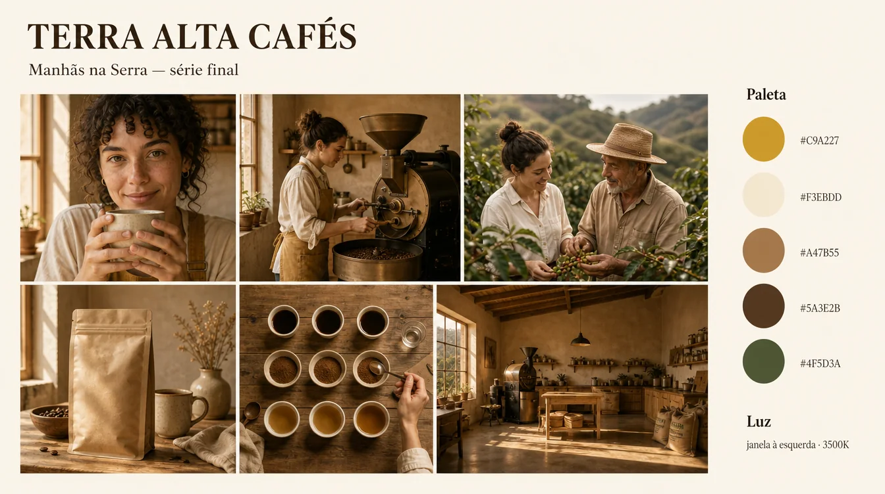
Prompt usado
A clean case-study presentation board, flat digital layout on a warm off-white background, like a slide a designer presents to a client. Top left, a bold serif title 'TERRA ALTA CAFÉS' and below it a smaller line 'Manhãs na Serra — série final'. Center: a neat 3-by-2 grid of six photographs with thin white margins, all sharing the same warm window light and muted mustard, cream, kraft and oak palette: a close-up portrait of a freckled barista with curly dark hair holding a cup, a woman at a vintage coffee roaster, a woman and an older farmer among coffee shrubs, a kraft coffee bag product shot, a top-down coffee cupping table, a wide rustic roastery interior at dawn. Right column: a small heading 'Paleta' with five round color swatches labeled '#C9A227', '#F3EBDD', '#A47B55', '#5A3E2B', '#4F5D3A', and a small heading 'Luz' with the line 'janela à esquerda · 3500K'. All equipment unbranded: no real brand names or logos anywhere. Minimal, elegant typography, generous whitespace, no other text.
Maquete de prancha gerada para mostrar o layout: título, grade de seis fotos com a mesma luz e paleta, amostras de cor com HEX e a nota de luz. As fotos da maquete foram inventadas pelo gerador; na sua prancha entram as imagens reais da série (monte-a em Canva, Figma ou num slide).
Por que aprender
Roteiro do case (5 a 7 telas ou blocos)
- O cliente e o pedido — duas frases do briefing e o uso das imagens.
- A tradução visual — adjetivos, referências descritas, constantes técnicas.
- O mestre e as variações — as três imagens com a tabela do ciclo de comparação.
- O sistema — trecho do JSON e as regras “pode / não pode” do preset.
- O antes/depois — as duas imagens e a nota de fluxo de trabalho.
- A série final — a prancha com as seis peças e onde cada uma será usada.
- Resultado e próximos passos — formatos entregues, o que você faria na próxima rodada.
Conceitos-chave em ação
Texto de apresentação (exemplo Terra Alta)
Terra Alta Cafés — “Manhãs na Serra” O pedido: imagens para feed, site, rótulo e ponto de venda que mostrassem uma torrefação familiar, artesanal e luminosa — sem o luxo frio dos cafés de balcão de mármore. A direção: tratamos a marca como uma manhã na montanha. Toda imagem tem luz de janela vinda da esquerda, quente (cerca de 3500K), texturas visíveis — linho, papel kraft, cerâmica, madeira — e a mesma paleta de mostarda, creme e marrom. A Lia, barista da casa, aparece sempre com a mesma aparência e figurino. A série: seis peças que contam a história do grão — quem faz, o ofício da torra, a origem no cafezal, o produto, o cuidado na prova e o espaço. Cada uma já sai no formato do seu uso (4:5 para o feed, 16:9 para o site, A3 para o cartaz). O sistema: entregamos também o preset — prompt-mestre, JSON e regras do que pode e do que não pode mudar — para que as próximas campanhas mantenham a mesma cara. Próximo passo sugerido: uma série de outono com os produtores parceiros, usando o mesmo sistema.
7Rubrica de avaliação
O que é
Rubrica do projeto final
| Critério | Em construção | Pronto para cliente | Nível portfólio |
|---|---|---|---|
| Briefing e tradução | briefing genérico; estilo = gosto pessoal | 5–7 frases claras; adjetivos, referências e uso definidos | constantes técnicas derivadas do briefing e negativos vindos do que o cliente não quer |
| Prompt e controle | prompt de uma linha; variações mudam várias coisas | mestre com seis camadas; A e B mudam uma camada cada | ciclo de comparação escrito, com as palavras de maior efeito identificadas |
| Sistema (JSON + preset) | não existe ou é o prompt copiado | JSON com variáveis e preset com pode/não pode | preset testado por outra pessoa e corrigido |
| Edição | antes/depois sem uso definido | uso e formato definidos; estrutural + conteúdo documentados | edição invisível em 100%; nota de fluxo com o que melhoraria |
| Coerência da série | imagens soltas, luz e paleta variando | seis peças com luz, paleta e personagem constantes | variedade de planos com papéis claros na história; nenhuma peça destoa lado a lado |
| Entrega e apresentação | arquivos sem nome, um formato só | formatos por plataforma, nomes no padrão, fichas | prancha + case com texto de apresentação e próximos passos |
Por que aprender
A rubrica tem seis linhas porque o trabalho tem seis entregas diferentes, e cada uma falha de um jeito próprio. O briefing falha por ser genérico; o prompt, por mudar várias coisas ao mesmo tempo; o sistema, por não existir fora da sua cabeça; a edição, por aparecer em 100%; a série, por ter uma peça que destoa; a entrega, por chegar sem nome e no formato errado. Os três níveis descrevem evidências, não esforço: “pronto para cliente” significa que outra pessoa conseguiria usar o que você entregou sem precisar te ligar.
Leia a rubrica linha por linha, não no geral. Um projeto com série excelente e entrega em “em construção” ainda não está pronto para cliente: o cliente vai receber arquivos sem nome num formato errado, e é disso que ele vai lembrar.
Conceitos-chave em ação
Como usar
- Marque o seu nível em cada linha, com a evidência (qual arquivo prova).
- Qualquer linha em “em construção” é a primeira coisa a refazer.
- Escolha uma linha para levar a “nível portfólio” nesta rodada — não todas.
- Peça a um colega que avalie com a mesma tabela e compare as notas.
- Guarde a rubrica preenchida na pasta do projeto: ela mostra sua evolução no próximo.
Portfólio não é o melhor que você já gerou. É a prova de que você consegue repetir.
Prática guiada: monte o projeto do seu cliente em uma sessão
Reserve de 3 a 4 horas. Use o cliente que você escolheu no módulo 1-2 e os arquivos que já produziu no curso; o que faltar, produza agora. Trabalhe na ordem das oito etapas e salve um arquivo por etapa.
Roteiro da sessão
- Reescreva o briefing (5–7 frases) e a tradução visual — use o molde em Materiais.
- Revise o prompt-mestre e gere de novo o mestre, a variação A e a variação B. Preencha a tabela do ciclo de comparação.
- Monte o JSON do sistema e o preset de uma página.
- Escolha uma imagem imperfeita e leve-a até a entrega (antes/depois + nota de fluxo).
- Gere a série de seis peças com o prompt abaixo, usando a imagem-mestre como referência nas peças com pessoa.
- Coloque as seis lado a lado com o mestre, refaça a que destoar e monte a prancha.
- Escreva o texto de apresentação e avalie tudo com a rubrica.
Peça de série com referência de identidade
Objetivo: Gerar cada peça com pessoa a partir da imagem-mestre anexada, mantendo rosto, figurino e as constantes do preset. Troque só o que está entre < >.
Use the person in the attached image as a strict identity reference (same face, <traços marcantes>, <cabelo>, <figurino>) and completely re-shoot a NEW photo: <plano> of <ação física concreta> in <lugar com 2–3 objetos>. <lente> lens at <abertura>, <ângulo>. <CONSTANTE DE LUZ DO PRESET, colada idêntica>. <CONSTANTE DE TEXTURAS DO PRESET, colada idêntica>. <composição: posição do sujeito e espaço para texto, se houver>. <CONSTANTE DE ESTILO E PALETA DO PRESET, colada idêntica>. <NEGATIVOS DO PRESET>.
Como verificar: Ponha a peça nova ao lado da imagem-mestre: o rosto e o figurino batem? A luz vem do mesmo lado? Se só uma constante falhou, reforce essa linha e gere de novo — não reescreva o resto.
Rascunho do texto de apresentação com um assistente
Objetivo: Transformar seu briefing, preset e lista de peças num texto de apresentação curto, que você depois revisa com a sua voz.
Você é diretor de arte e vai apresentar uma série de imagens a um cliente. Escreva um texto de apresentação em português, com no máximo 220 palavras, em cinco parágrafos curtos: o pedido, a direção visual, a série (uma frase por peça), o sistema entregue e um próximo passo sugerido. Tom: claro, confiante, sem jargão de marketing e sem adjetivos vazios. Use só as informações abaixo. BRIEFING: <cole o briefing> CONSTANTES VISUAIS: <luz, paleta, texturas, estilo> PEÇAS: <1 linha por peça: papel na história + formato de uso> ENTREGA: <formatos, preset, JSON>
Como verificar: Todo fato do texto está no seu briefing ou no preset? Corte qualquer promessa que você não fez e troque palavras genéricas (“incrível”, “impactante”) por decisões concretas.
Lição de casa
Este é o projeto de conclusão do curso. Ele usa o mesmo cliente que você escolheu no módulo 1-2 e reaproveita o que você produziu nos módulos anteriores. O resultado é a primeira peça do seu portfólio de direção de imagem com IA.
Nível básico (obrigatório)
- Briefing de 5–7 frases e a tradução visual (adjetivos, referências descritas, uso principal).
- Prompt-mestre + variações A e B, com as três imagens e a tabela do ciclo de comparação.
- JSON do sistema e preset de uma página com as regras “pode / não pode”.
- Um antes/depois de edição com uso definido e nota de fluxo de 5–8 itens.
- Série final de seis imagens coerentes, entregues nos formatos das plataformas do cliente, com nomes no padrão.
- Prancha da série e texto de apresentação; rubrica preenchida por você.
Nível avançado (desafio)
- Case publicável: transforme o projeto em uma página de portfólio (site, Behance, PDF) seguindo o roteiro de 7 blocos, com antes/depois, trecho do preset e a série.
- Teste cego do preset: entregue só o preset a outra pessoa, peça duas imagens novas e inclua no case o que você corrigiu no preset depois do teste.
- Série de extensão: com o mesmo sistema, gere mais três peças para uma campanha sazonal e mostre que elas encaixam na prancha sem ajuste.
Entregue/guarde: Pasta “projeto-final” com subpastas por etapa (01-briefing … 08-rubrica), a prancha em PDF ou PNG, o texto de apresentação e a rubrica preenchida. Se quiser feedback, apresente a prancha e termine com uma pergunta específica (“a peça 5 está na mesma série das outras?”).
Teste sua decisão
1. Você vai gerar uma peça nova da série com a Lia. Qual prática mais protege a coerência?
Consultar a explicação
Referência de identidade + constantes coladas palavra por palavra é o que mantém rosto, luz e cor. Reescrever a descrição muda o resultado; editar uma edição acumula deriva a cada geração.
2. O cliente recebeu seis imagens bonitas, mas em pastas sem nome e só em 3:2. Pela rubrica, onde o projeto está?
Consultar a explicação
A rubrica se lê por linha. Série excelente não compensa entrega sem formatos por plataforma, nomes e fichas — é a primeira linha a refazer.
3. Na reunião de apresentação, qual ordem funciona melhor?
Consultar a explicação
A prancha mostra o sistema de uma vez, o case explica as decisões e só então os arquivos entram. Começar pelos arquivos transforma a conversa em gosto peça a peça.
Responder não marca a leitura nem bloqueia o próximo módulo.
O que levar desta aula
- Portfólio de IA vende direção: briefing traduzido em decisões, controle das variações e uma série que parece de uma marca só.
- Briefing de 5–7 frases → adjetivos, referências descritas, constantes técnicas e uso principal.
- Mestre + duas variações de uma camada cada, com o ciclo de comparação escrito, viram critério — não gosto.
- JSON + preset registram o que é fixo e o que varia; teste o preset com outra pessoa.
- Coerência = mesma referência de identidade + constantes coladas idênticas + variedade de planos com papéis claros.
- Apresente prancha → case → arquivos, e avalie cada linha da rubrica antes de enviar.